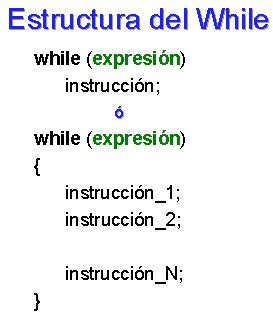
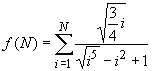

Objetivos:
- Que seas capaz de utilizar funciones y procedimientos, acompañados
de la estructura "while"
- Que desarrolles la habilidad de de hacer frente a los inconvenientes
del uso de estructuras cíclicas, es decir, en caso de que una función
se cicle, deberás ser capaz de identificar el elemento que provoca
este mal funcionamiento
- Que ejercites la habilidad de hacer frente a los mensajes de error
que envía la herramienta de desarrollo
- Que refuerces las habilidades de sociabilización mediante
el proceso de trabajo en equipo
- Que ayudes a tus compañeros a encontrar la mejor solución
a los programas

Forma de trabajo:
Actividad en equipos colaborativos e individual

Tiempo estimado:
90 minutos

Instrucciones:
- Intégrate con tu equipo colaborativo y sigue las indicaciones
del profesor.
- Junto con tus compañeros de equipo, analiza cada uno de
los ejercicios que se presentan a continuación. Identifiquen, en
equipo, cual sería el algoritmo para la solución de cada uno
de los ejercicios. Recuerden documentarlos en sus hojas membretadas.
- De manera individual escribe un programa en C para cada uno de
los ejercicios. Recuerda basarte en el algoritmo que se generó en
el equipo.
- Una vez que hayas terminado tu programa, es tu responsabilidad
ayudar a tus compañeros de equipo a que terminen su programa.
- Entrega, vía la plataforma, los archivos *.c que
contengan los programas en C.
Utiliza el siguiente esquema como apoyo para desarrollar tu laboratorio:

Ejercicios.
Implementa las siguientes funciones haciendo
uso del ciclo while:
- La función potencia
que recibe 2 números enteros x y n y regresa el
resultado de elevar x a la n. Como la posibilidad de que el
resultado sea relativamente grande, es conveniente que el tipo de dato de
la función sea float, ya que si la propusiéramos como int,
muy seguramente desbordaríamos su capacidad. Utiliza el ciclo while.
El encabezado de la función, podría ser el siguiente:
float potencia (int x, int n)
{
- La función
sumatoria que recibe un
valor entero n mayor o igual a 1 y regresa el resultado de la siguiente
sumatoria. Utiliza el ciclo while y la función potencia
implementada anteriormente, es decir, en lugar de utilizar
la función pow(x,y), utiliza la función potencia(x,y) para
elevar por ejemplo i5.
.

- La serie que recibe un valor entero mayor o igual
a uno y regresa el resultado de la siguiente serie:
serie(N) = 10
- 11 + 12 - 13 ....
.
Por ejemplo:
.
serie(2) =
10 - 11 = -1
serie(3) =
10 - 11 + 12 = 11
- La función
aproximacionPI, que recibe el
límite N de la serie para calcular la aproximación
de PI. Existen diferentes algoritmos que nos permiten obtener una cercana
aproximación al valor de la constante PI, uno de ellos es el Algoritmo
de Gottfried Wilhem von Leibniz:
.

.
- El procedimiento funciones, que despliegue el siguiente menú en pantalla:
FUNCIONES
1. Potencia
2. Evaluar sumatoria
3. Serie
4. Aproximacion de PI
5. Salir
Dame una opción:.
- En la sección del "main()" construya un programa
completo en C que utilice el procedimiento funciones para desplegar
el menú correspondiente y de acuerdo a la opción seleccionada
por el usuario utiliza la función apropiada de las implementadas
anteriormente. Utiliza el estatuto de control Switch.
- Recuerde que la captura de datos y validación de valores
debe ser realizada en la sección del "main ( )", pues las funciones
NO pueden realizar las tareas de validación o captura de datos.
- Guardar esta sección con el nombre: E_Matricula.c.

Forma de entrega:
- Envía tu laboratorio por blackboard, no se aceptarán
laboratorios por ningún otro medio.
- Envía solo tus archivos *.c.
- Los laboratorios enviados posteriormente a la fecha límite
NO SERÁN CALIFICADOS.
.
INSTRUCCIONES PARA ENVIAR TU LABORATORIO
POR BLACKBOARD
- Haz clic en la actividad de Entrega de Laboratorio.
- Escribe comentarios si lo consideras necesario.
- Da clic en el botón de Browse My Computer y localiza
el archivo *.c. Si necesitas agregar más archivos repite este
proceso hasta agregar todos tus archivos.
- Haz clic en Submit.
- Al indicar que ha subido exitosamente hacer clic en OK.
. |